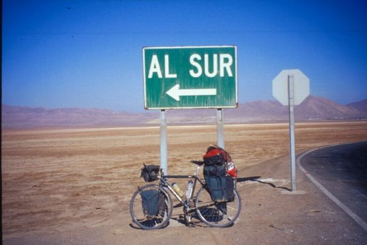
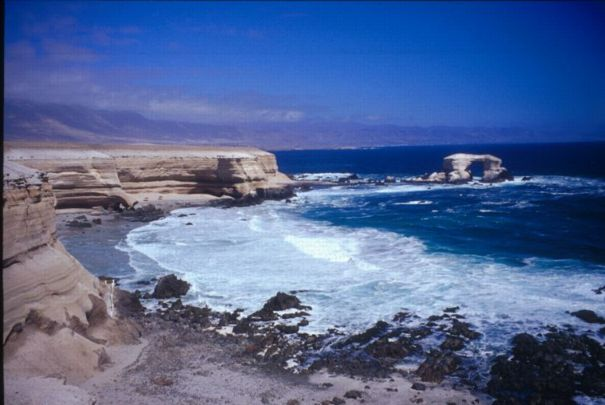
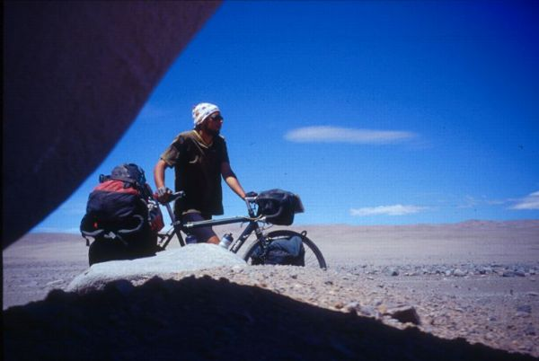
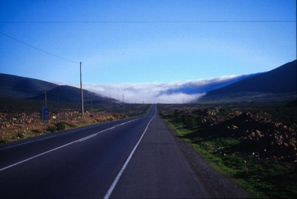

4/4
|  |
| Southwards through the Atacama Desert Shortly before Antofagasta at the Pacific coast, I separate from the two other cyclists. I don't have much time left in South America and I want to see as much desert as possible. But my enthusiasm gets soon a setback. Two spokes are broken and the emergency spokes made out of a thick wire doesn't withstand the applied forces. I have to hitchhike back to Antofagasta to buy new spokes. Arrived in the city, I get a room in the cheapest hotel in town and (not surprisingly) I meet my fellow cyclists. After a couple of relaxing days, my bicycle is ready for the desert.
|
|  |
| La Portada, Antofagasta
|
|  |
| Driest place on Earth: 400 years without a record of rain I want to visit the Cerro Paranal observatory of the ESO (European Southern Observatory). This requires a 180 km detour on gravel roads through the desert but I don't like the Panamericana, so the decision has been easy. The region around the observatory belongs to a very dry region of the Atacama. At 2000m above sea level no rain has ever been recorded. Indeed, I don't see the slightest sign of vegetation. At the observatory, the guardian doesn't want to let me in. It would only have been possible on two Saturdays a month and you need a permit. Neither the date is right, nor do I have some kind of permit... But the guardian seems to pity me and he gives me his lunch from noon and makes me a coffee. Then he proudly shows me around the picture gallery of galaxies in the waiting room. After the ascent to 2660m for Cerro Paranal, the road goes all the way down to sea level. Cycling along the Coast of Bones, I reach the Panamericana after a day.
|
|  |
| Camanchaca - Coastal fog coming inland Shortly before La Serena I'm greeted with thick fog and rainfall. The desert has most obviously ended. Also, I'm running out of time. So I take a bus to reach Santiago. I spend the last days in Santiago together with a cyclist I met further up in the Atacama desert. We enjoy a little bit of shopping, cinema, cooking pasta and some errant journeys by bus or subway. After
11 weeks in South America and don't feel like as if I would have
enough
of cycling. But the next semester at the university starts in three
days marking a sharp transition to another lifestyle. One day I
will cycle the "rest of the route", all the way down to
Ushuaia... |
Copyright © 2001 by Daniel Croll. All rights reserved